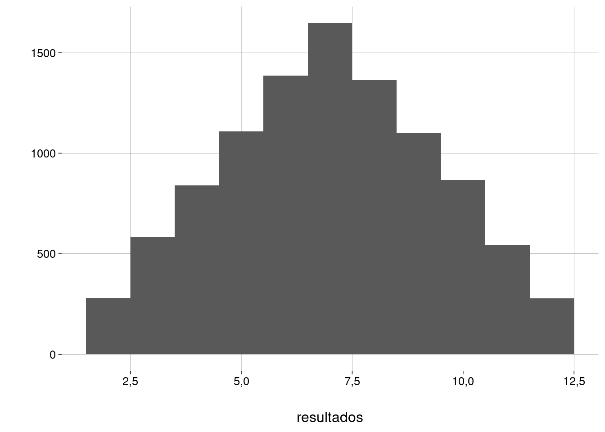
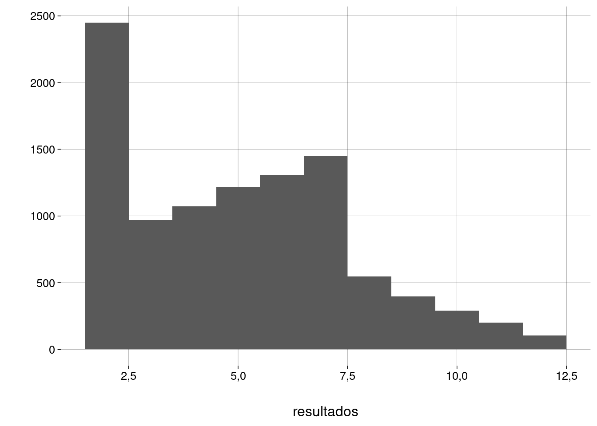

Capítulo 2 Introdução a R
2.2 Usando o RStudio
Leia uma introdução ao R e ao RStudio no livro Ciência de Dados com R.
Ali, você vai encontrar exemplos e exercícios.
2.3 RMarkdown
Para ver uma referência sobre a sintaxe do RMarkdown, vá ao menu Help do RStudio, escolha Cheatsheets e, a seguir, R Markdown Cheat Sheet ou R Markdown Reference Guide.
2.4 Apresentação
R é várias linguagens em uma:
R base,
OO (S3),
OO (S4),
Tidyverse (pacote usado para Ciência de Dados e gráficos).
2.5 Tudo é vetor
-
Usamos a função
c()(concatenate) para criar vetores:vetor <- c(1, 2, 4, 7, 0, -1) vetor## [1] 1 2 4 7 0 -1 Em um vetor, todos os elementos precisam ser do mesmo tipo.
-
Mesmo que você use
c(c(...), c(...)), o vetor criado vai ter um único nível. Não existem vetores aninhados.## [1] 1 2 3 4 5 Mais adiante, veremos como criar listas, que podem ter elementos de tipos diferentes e sublistas aninhadas.
-
Outras maneiras de criar vetores:
-
O operador
:constrói sequências:1:10## [1] 1 2 3 4 5 6 7 8 9 1010:1## [1] 10 9 8 7 6 5 4 3 2 10.5:10.5## [1] 0,5 1,5 2,5 3,5 4,5 5,5 6,5 7,5 8,5 9,5 10,50.5:10## [1] 0,5 1,5 2,5 3,5 4,5 5,5 6,5 7,5 8,5 9,5 -
A função
seqpermite especificar um incremento diferente de \(1\) e \(-1\):seq(1, 10)## [1] 1 2 3 4 5 6 7 8 9 10seq(10, 1)## [1] 10 9 8 7 6 5 4 3 2 1seq(1, 10, 0.5)## [1] 1,0 1,5 2,0 2,5 3,0 3,5 4,0 4,5 5,0 5,5 6,0 6,5 7,0 7,5 8,0 8,5 ## [17] 9,0 9,5 10,0 -
A função
repcria vetores com elementos repetidos:rep(1, 10)## [1] 1 1 1 1 1 1 1 1 1 1## [1] 1 2 1 2 1 2 1 2 1 2 1 2 1 2 1 2 1 2 1 2## [1] 1 1 1 1 1 1 1 1 1 1 2 2 2 2 2 2 2 2 2 2## [1] 1 1 1 2 2 2 2
-
-
O número que aparece na saída, entre colchetes, é o índice do primeiro elemento daquela linha:
rep(1, 1000)## [1] 1 1 1 1 1 1 1 1 1 1 1 1 1 1 1 1 1 1 1 1 1 1 1 1 1 1 1 1 1 1 1 1 1 1 1 1 1 1 1 ## [40] 1 1 1 1 1 1 1 1 1 1 1 1 1 1 1 1 1 1 1 1 1 1 1 1 1 1 1 1 1 1 1 1 1 1 1 1 1 1 1 ## [79] 1 1 1 1 1 1 1 1 1 1 1 1 1 1 1 1 1 1 1 1 1 1 1 1 1 1 1 1 1 1 1 1 1 1 1 1 1 1 1 ## [118] 1 1 1 1 1 1 1 1 1 1 1 1 1 1 1 1 1 1 1 1 1 1 1 1 1 1 1 1 1 1 1 1 1 1 1 1 1 1 1 ## [157] 1 1 1 1 1 1 1 1 1 1 1 1 1 1 1 1 1 1 1 1 1 1 1 1 1 1 1 1 1 1 1 1 1 1 1 1 1 1 1 ## [196] 1 1 1 1 1 1 1 1 1 1 1 1 1 1 1 1 1 1 1 1 1 1 1 1 1 1 1 1 1 1 1 1 1 1 1 1 1 1 1 ## [235] 1 1 1 1 1 1 1 1 1 1 1 1 1 1 1 1 1 1 1 1 1 1 1 1 1 1 1 1 1 1 1 1 1 1 1 1 1 1 1 ## [274] 1 1 1 1 1 1 1 1 1 1 1 1 1 1 1 1 1 1 1 1 1 1 1 1 1 1 1 1 1 1 1 1 1 1 1 1 1 1 1 ## [313] 1 1 1 1 1 1 1 1 1 1 1 1 1 1 1 1 1 1 1 1 1 1 1 1 1 1 1 1 1 1 1 1 1 1 1 1 1 1 1 ## [352] 1 1 1 1 1 1 1 1 1 1 1 1 1 1 1 1 1 1 1 1 1 1 1 1 1 1 1 1 1 1 1 1 1 1 1 1 1 1 1 ## [391] 1 1 1 1 1 1 1 1 1 1 1 1 1 1 1 1 1 1 1 1 1 1 1 1 1 1 1 1 1 1 1 1 1 1 1 1 1 1 1 ## [430] 1 1 1 1 1 1 1 1 1 1 1 1 1 1 1 1 1 1 1 1 1 1 1 1 1 1 1 1 1 1 1 1 1 1 1 1 1 1 1 ## [469] 1 1 1 1 1 1 1 1 1 1 1 1 1 1 1 1 1 1 1 1 1 1 1 1 1 1 1 1 1 1 1 1 1 1 1 1 1 1 1 ## [508] 1 1 1 1 1 1 1 1 1 1 1 1 1 1 1 1 1 1 1 1 1 1 1 1 1 1 1 1 1 1 1 1 1 1 1 1 1 1 1 ## [547] 1 1 1 1 1 1 1 1 1 1 1 1 1 1 1 1 1 1 1 1 1 1 1 1 1 1 1 1 1 1 1 1 1 1 1 1 1 1 1 ## [586] 1 1 1 1 1 1 1 1 1 1 1 1 1 1 1 1 1 1 1 1 1 1 1 1 1 1 1 1 1 1 1 1 1 1 1 1 1 1 1 ## [625] 1 1 1 1 1 1 1 1 1 1 1 1 1 1 1 1 1 1 1 1 1 1 1 1 1 1 1 1 1 1 1 1 1 1 1 1 1 1 1 ## [664] 1 1 1 1 1 1 1 1 1 1 1 1 1 1 1 1 1 1 1 1 1 1 1 1 1 1 1 1 1 1 1 1 1 1 1 1 1 1 1 ## [703] 1 1 1 1 1 1 1 1 1 1 1 1 1 1 1 1 1 1 1 1 1 1 1 1 1 1 1 1 1 1 1 1 1 1 1 1 1 1 1 ## [742] 1 1 1 1 1 1 1 1 1 1 1 1 1 1 1 1 1 1 1 1 1 1 1 1 1 1 1 1 1 1 1 1 1 1 1 1 1 1 1 ## [781] 1 1 1 1 1 1 1 1 1 1 1 1 1 1 1 1 1 1 1 1 1 1 1 1 1 1 1 1 1 1 1 1 1 1 1 1 1 1 1 ## [820] 1 1 1 1 1 1 1 1 1 1 1 1 1 1 1 1 1 1 1 1 1 1 1 1 1 1 1 1 1 1 1 1 1 1 1 1 1 1 1 ## [859] 1 1 1 1 1 1 1 1 1 1 1 1 1 1 1 1 1 1 1 1 1 1 1 1 1 1 1 1 1 1 1 1 1 1 1 1 1 1 1 ## [898] 1 1 1 1 1 1 1 1 1 1 1 1 1 1 1 1 1 1 1 1 1 1 1 1 1 1 1 1 1 1 1 1 1 1 1 1 1 1 1 ## [937] 1 1 1 1 1 1 1 1 1 1 1 1 1 1 1 1 1 1 1 1 1 1 1 1 1 1 1 1 1 1 1 1 1 1 1 1 1 1 1 ## [976] 1 1 1 1 1 1 1 1 1 1 1 1 1 1 1 1 1 1 1 1 1 1 1 1 1 Vetores começam no índice 1!!!!
-
Tudo é vetor:
10## [1] 10is.vector(10)## [1] TRUElength(10)## [1] 1 -
O valor
NAsignifica ausência de informação:notas <- c(10, 8, NA, 7, 10) notas## [1] 10 8 NA 7 10
2.6 Operações com vetores
-
Adição e outras operações aritméticas::
v3 <- c(10, 20)v1## [1] 1 2v2## [1] 3 4 5v3## [1] 10 20-
R recicla o vetor mais curto, mas avisa quando o comprimento do maior vetor não é múltiplo inteiro do comprimento do menor vetor.
v1 + v3## [1] 11 22v1 + v2## Warning in v1 + v2: longer object length is not a multiple of shorter object length## [1] 4 6 6## [1] 4 6 6 8 8 10v1 - v4## [1] -2 -2 -4 -4 -6 -6v1 * v4## [1] 3 8 5 12 7 16v1 / v4## [1] 0,3333333 0,5000000 0,2000000 0,3333333 0,1428571 0,2500000
-
-
Funções úteis para vetores:
-
Somar todos os elementos:
sum(v4)## [1] 33 -
O valor
NAse propaga em operações aritméticas:notas## [1] 10 8 NA 7 10sum(notas)## [1] NA -
Para ignorar os valores
NA, use o argumentona.rm:sum(notas, na.rm = TRUE)## [1] 35 -
Média de todos os elementos:
mean(notas, na.rm = TRUE)## [1] 8,75sum(notas, na.rm = TRUE) / 4## [1] 8,75
-
2.7 Indexação
-
Com um valor inteiro:
v5 <- 1:50 * 4 v5## [1] 4 8 12 16 20 24 28 32 36 40 44 48 52 56 60 64 68 72 76 80 ## [21] 84 88 92 96 100 104 108 112 116 120 124 128 132 136 140 144 148 152 156 160 ## [41] 164 168 172 176 180 184 188 192 196 200v5[10]## [1] 40 -
Com um vetor de inteiros:
v5[1:10]## [1] 4 8 12 16 20 24 28 32 36 40v5[c(2, 10, 13, 30)]## [1] 8 40 52 120v5[seq(2, 50, 2)]## [1] 8 16 24 32 40 48 56 64 72 80 88 96 104 112 120 128 136 144 152 160 ## [21] 168 176 184 192 200 -
Com um vetor de booleanos, os elementos indexados por
TRUEsão selecionados:v4## [1] 3 4 5 6 7 8v4[c(TRUE, TRUE, FALSE, FALSE, TRUE, FALSE)]## [1] 3 4 7 -
Uma condição produz um vetor de booleanos:
v4 > 5## [1] FALSE FALSE FALSE TRUE TRUE TRUE -
Logo, podemos indexar com uma condição:
v4[ v4 > 5 ]## [1] 6 7 8v4[ v4 %% 2 != 0 ]## [1] 3 5 7notas[!is.na(notas)]## [1] 10 8 7 10 -
Para especificar os elementos a não selecionar, use índices negativos.
v5## [1] 4 8 12 16 20 24 28 32 36 40 44 48 52 56 60 64 68 72 76 80 ## [21] 84 88 92 96 100 104 108 112 116 120 124 128 132 136 140 144 148 152 156 160 ## [41] 164 168 172 176 180 184 188 192 196 200v5[-1]## [1] 8 12 16 20 24 28 32 36 40 44 48 52 56 60 64 68 72 76 80 84 ## [21] 88 92 96 100 104 108 112 116 120 124 128 132 136 140 144 148 152 156 160 164 ## [41] 168 172 176 180 184 188 192 196 200v5[-c(1, 4, 20)]## [1] 8 12 20 24 28 32 36 40 44 48 52 56 60 64 68 72 76 84 88 92 ## [21] 96 100 104 108 112 116 120 124 128 132 136 140 144 148 152 156 160 164 168 172 ## [41] 176 180 184 188 192 196 200
2.9 Simular lançamentos de dados
-
Vamos criar um dado de \(6\) lados. Basta um vetor:
(dado <- 1:6)## [1] 1 2 3 4 5 6 -
Para lançar este dado uma vez, usamos
sample:sample(dado, 1)## [1] 1 -
Para lançar o dado várias vezes:
n <- 6 sample(dado, n, replace = TRUE)## [1] 6 4 6 5 6 2 Observe que, para permitir que o mesmo valor apareça mais de uma vez, precisamos usar
replace = TRUE— a amostragem será feita com reposição.-
Uma função para retornar a soma de 2 dados:
lancar2 <- function() { dado <- 1:6 lancamentos <- sample(dado, size = 2, replace = TRUE) sum(lancamentos) }lancar2()## [1] 8 -
Vamos generalizar a função:
-
Vamos lançar os \(2\) dados \(10\) mil vezes, usando a função
replicate:resultados <- replicate(1e4, lancar())
2.10 Visualização
-
A função
qplot, do pacotetidyverse, produz um gráfico adequado aos argumentos recebidos — aqui, um histograma:qplot(resultados, bins = 11)## Warning: `qplot()` was deprecated in ggplot2 3.4.0. ## This warning is displayed once every 8 hours. ## Call `lifecycle::last_lifecycle_warnings()` to see where this warning was generated. Em um capítulo sobre visualização, você vai aprender a configurar melhor a aparência de gráficos como este.
2.11 Dados viciados
-
Vamos modificar a função
lancarpara receber um vetor com as probabilidades dos lados: -
Lançando dados viciados:
qplot(resultados, bins = 11)
2.12 Exercícios
Para criar sua conta no RStudio Cloud, acesse https://rstudio.cloud/.
-
Se você preferir instalar o R no seu computador, acesse
https://cran.r-project.org/ para baixar e instalar o R, e
https://rstudio.com/products/rstudio/download/ para baixar e instalar o RStudio, um IDE específico para R.
Abra o RStudio Cloud ou o seu RStudio instalado localmente.
Crie um novo projeto. Sempre trabalhe em projetos para ter seus arquivos organizados.
-
Para instalar o
swirl(pacote do R para exercícios interativos), execute o seguinte comando no console do RStudio:install.packages("swirl") -
Para instalar os exercícios de introdução a R, execute os seguintes comandos no console do RStudio:
library(swirl) install_course_github('fnaufel', 'introR') -
Mude o idioma para português e execute o
swirl.select_language('portuguese', append_rprofile = TRUE) swirl() Na primeira execução, você vai precisar se identificar (qualquer nome serve). Com essa identificação, o
swirlvai registrar o seu progresso nas lições.No
swirl, as perguntas são mostradas no console. Você também deve responder no console.Às vezes, um script será aberto no editor de textos para que você complete um programa. Quando seu programa estiver pronto, salve o arquivo e digite
submit()no console para oswirlprocessar o script.O
swirldá instruções claras no console. Na dúvida, digiteinfo()no prompt do R (>).Se, em vez do prompt do R, o console mostrar reticências (
...), tecle Enter.Se nada funcionar, tecle ESC.
-
Para voltar para os exercícios, digite
-
Se, quando você tentar instalar os exercícios, acontecer um erro, desinstale todos os cursos com os comandos
e tente instalar os exercícios novamente.